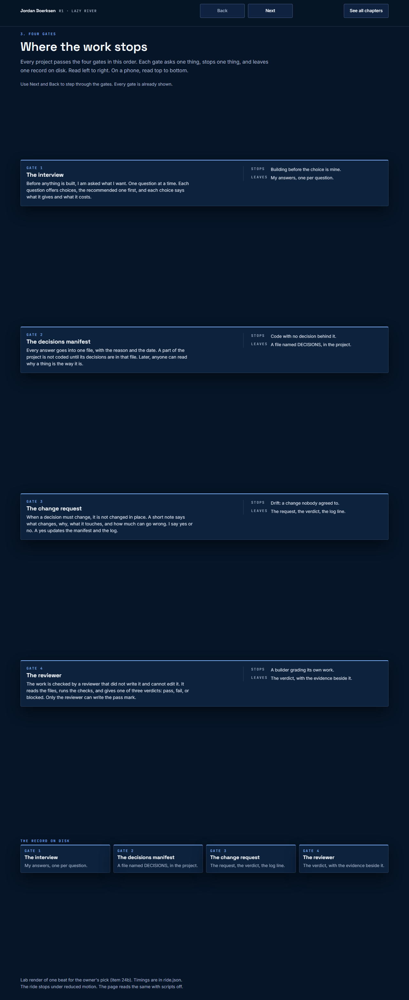
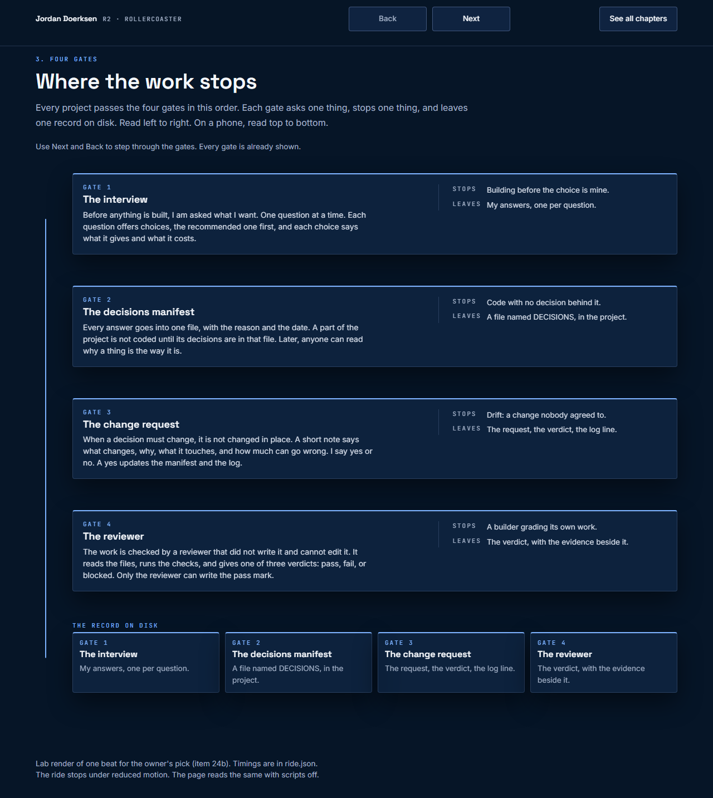
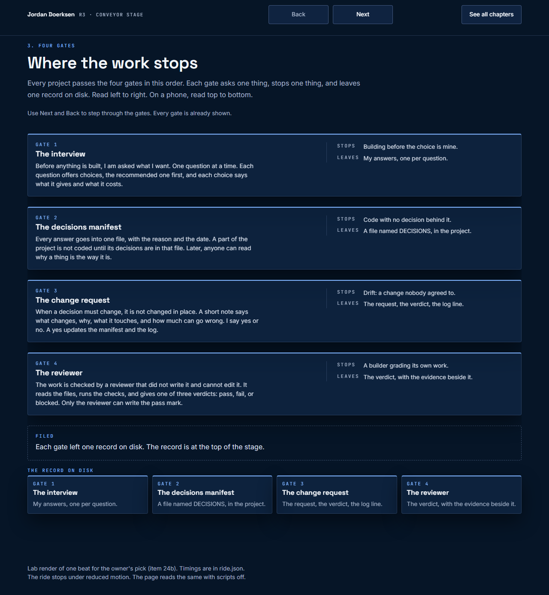

-
R1
Lazy river
The page itself flows. It scrolls on its own at a slow, constant speed, eases to a stop at each gate and dwells there. A ring traces the card, and the card settles 4 px into place.
- Gives
- Closest to a lazy river, and the page is still one document.
- Costs
- The page moves under the reader. The pause rules carry the most weight, and a stray scroll hands control back.

Reduced-motion still, 1280 wide: the stepped page with Next and Back, no timer. 390 wide -
R2
Rollercoaster
A track runs down the side from gate to gate. The particle is the car and the window follows it. At each station the car orbits the card, the border traces, the number ticks up and the track to the next gate draws.
- Gives
- The most rollercoaster. The motion has a cause: the car brings each gate.
- Costs
- The most engineering, and the camera move has to stay slow.

Reduced-motion still, 1280 wide: the stepped page with Next and Back, no timer. 390 wide -
R3
Conveyor stage
No page scroll at all. One stage the height of the window. The gates ride a belt in from below and file up into the record at the top. The bar and its particle sit at the foot and drive the belt.
- Gives
- Answers scrolling forever most directly: there is no scroll.
- Costs
- The furthest from a normal web page. Deep links set the stage, and the phone layout needs the most care.

Reduced-motion still, 1280 wide: the stepped page with Next and Back, no timer. 390 wide